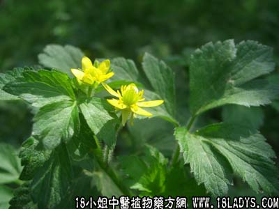

别名：光明草、毛芹菜、去膜草。
植物名：小回回蒜。
生长环境：本品为一年生直立草本。生于潮湿地方或浅水中。
分布：广布我国南北各省，广州近郊田野间常见。
入药部分：全草。
采集期：春多、夏少。
自采地点：家种及湿地野生。
性味：性凉、味辛。
功能：清肝明目、去眼膜、去眼红筋。
主治、用量和用法：1、风热眼痛、羞明：干用3钱至5钱，清水煎后加片糖服。或不加糖，加猪横脷同煎；2、眼起红筋：干用3至5钱，清水煎服，加片糖服。
验方：（治眼热方）自扣草5钱、犁头草3钱，清水三碗，煎成一碗服。
（方解）清肝明目自扣草，眼起红筋服宜早，记取犁头草再加，煎服数剂功效好。
禁忌：本品外敷有刺激性，能发泡，不可入眼，内服宜按医生叮嘱，不可过量。
参考资料：《广州常用草药验方集解》内载治疗眼发红经验方：自扣草5钱、老鼠拉冬瓜一两，水两碗，煎成一碗，饭后服。
（方解）眼热为肝肺经风热而起，轻者红痛多泪，羞明，久则起膜，本方自扣草味辛、性凉、清肝肺热、退眼膜。老鼠拉冬瓜味甘淡、性凉、清肝热、退眼红筋，去湿火，利小便，两位并用，其效益著。
（方歌）眼热发红泪偏多，羞明疼痛奈如何，老鼠拉瓜自扣草，煎成内服自无碍。
本文解释权归中药大全，本文地址：https://www.daquan.com/post/1610.html